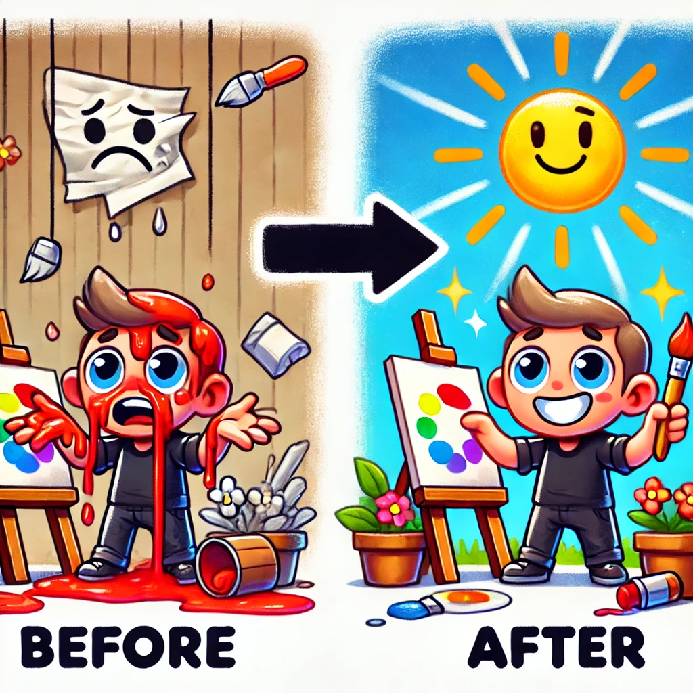
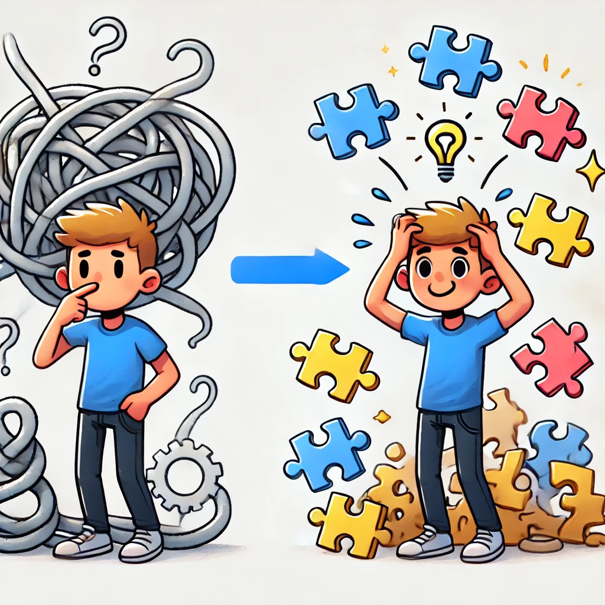

Knowledge Distillation
Teaching reasoning capabilities to smaller models using effective knowledge distillation techniques.
I am a final year Ph.D. student at ETH Zürich in Switzerland, supervised by Prof. Mrinmaya Sachan (ETH), and Nicholas Monath (Google DeepMind).
My research interest focuses on exploring the reasoning capabilities of large language models (LLMs) and enhancing the reasoning skills of smaller models through effective distillation techniques.
Broadly, I am also exploring other machine learning areas such as alignment, autonomous agents, and multimodal models.
During my PhD, I spent my summers as an intern at FAIR, Meta with Asli Celikyilmaz on agent-based
reasoning, at Microsoft Research with Patrick Xia and Jason Eisner
on improving the reasoning capabilities of LLMs by revising their output, and
at Amazon Alexa AI on setting constraints on the output space of a neural network.
I have experience with fine-tuning LLMs at scale (up to Llama 70B), distilling reasoning capabilities from
larger models (GPT-4, Claude, Llama 70B) to smaller models (Llama, Mistral, T5, GPT-2), and aligning LLMs to generate more accurate
and contextually appropriate responses (PPO, DPO,RLHF).
Before starting my PhD, I gained valuable experience in researching and deploying conversational AI systems at Insiders Technology GmbH
and NeuralSpace .
I also worked with Prof. Marcus Liwicki and Prof.
Seiichi Uchida during my masters studies.
In my free time, I enjoy playing tennis, reading about conspiracy theories, and collecting sneakers.

Teaching reasoning capabilities to smaller models using effective knowledge distillation techniques.

A refinement framework that explores how reasoning can be improved in LLMs through resampling and selection.

Can decomposition of problem into simpler problems assist students in learning a concept better?